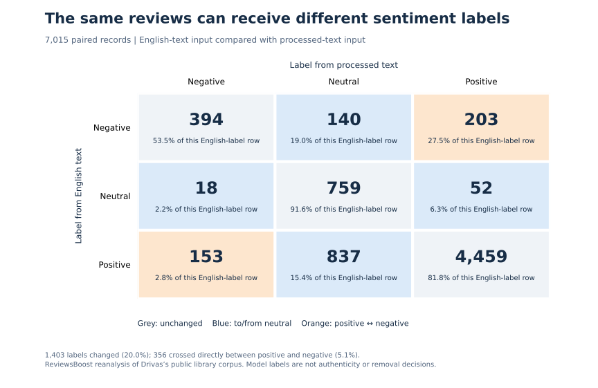
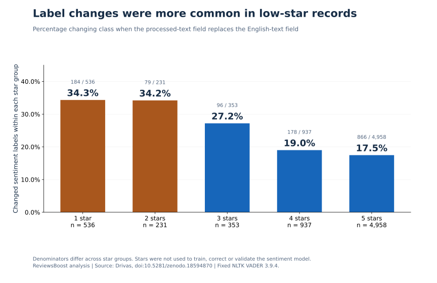
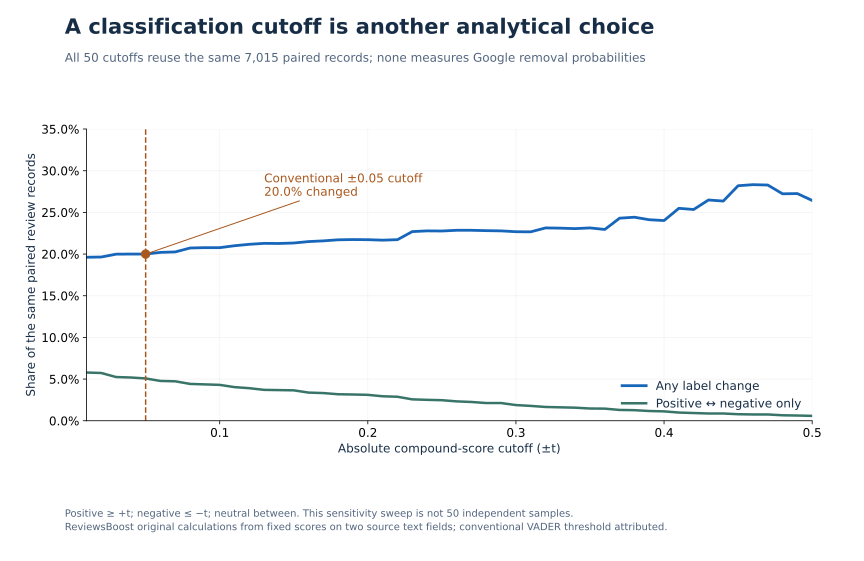

The finding: 1,403 labels changed, not 1,403 fake reviews
In our paired reanalysis, 1,403 of 7,015 Google review records (20.0%) changed between positive, neutral and negative labels when we switched the input from the workbook’s English-text field to its processed-text field. The model and dictionary stayed the same. Of these changes, 356 crossed directly between positive and negative; 1,047 involved neutral.
Model sensitivity to two stored text representations in a worldwide academic-library corpus. It does not measure fake reviews, Google’s moderation model, removal success, customer outcomes or Canadian prevalence. Neither input is treated as the correct label.
This matters when a dashboard calls a review “negative,” an automated report flags a rating/text mismatch, or a provider presents a sentiment score as evidence. A label can depend on the analytical choices made before anyone assesses the review itself.
Our contribution is a reproducible comparison of the two supplied text fields, a star-rating breakdown, a 50-cutoff sensitivity analysis and a library-weighting check. The aggregate data, chart files and reproduction scripts are available below. This is an independent computational analysis, not a peer-reviewed validation study.
Before the percentages: what was actually in the file?
We used Ioannis C. Drivas’s public academic-library Google Maps review corpus, released under CC BY 4.0. The source describes collection during March–July 2025, machine translation of non-English text, and removal of duplicates and rating-only entries. Its title refers to 7,605 reviews. Our audit of the downloadable workbook found a different analysis denominator.
| Measure | Count | How we use it |
|---|---|---|
| Reviews in the source title | 7,605 | Declared count; not our observed denominator |
| Worksheet rows after the header | 7,056 | Includes rows without review records |
| Score-only rows excluded | 41 | Only the supplied sentiment-score field is populated; no review ID, profile ID or stars |
| Eligible paired review records | 7,015 | Unique profile/review pairs, valid individual stars and both text fields |
| Library profiles represented | 86 | Groups for the weighting check |
The title exceeds the eligible paired count by 590. We cannot reconcile that gap from the file and documentation; it is not evidence of deleted, missing or fake Google reviews. The 41 score-only rows explain the worksheet-to-analysis difference, not the full title-to-analysis gap. No duplicate profile/review keys or incomplete text pairs remained among the 7,015 eligible records.
The source’s declared publication date is September 10, 2025; the repository record was created February 10, 2026. We retain both dates in the release metadata. Review years in the file span 2008–2025. None of these dates turns the corpus into a fresh survey of Canadian businesses.
What we held constant—and what we changed
VADER’s authors describe it as “a lexicon and rule-based sentiment analysis tool.” It produces a compound sentiment score using words and language rules. It is not an authenticity test. We used the NLTK implementation, pinned to version 3.9.4 and a checksum-verified lexicon.
- Read the source columns named
Google TranslationandProcessed Textfor each eligible record. - Strip surrounding whitespace, then score each field independently with the same model. We did not translate the text again or apply new cleaning rules.
- Classify compound scores as positive at ≥ +0.05, negative at ≤ −0.05, and neutral strictly between those boundaries, following the author-documented convention.
- Compare the two labels for the same review. Use
review_ratingfor individual stars, not the separate business-levelratingcolumn.
This produces 14,030 model evaluations of 7,015 reviews. It does not double the sample. We do not reuse or attempt to reproduce the workbook’s supplied compound scores. The exact original preprocessing pipeline is not established by this audit, so we cannot attribute the changes to a particular operation such as punctuation removal or negation handling.
The largest movement was from positive to neutral



| English-field label | Processed negative | Processed neutral | Processed positive | Row total |
|---|---|---|---|---|
| Negative | 394 | 140 | 203 | 737 |
| Neutral | 18 | 759 | 52 | 829 |
| Positive | 153 | 837 | 4,459 | 5,449 |
| Column total | 565 | 1,736 | 4,714 | 7,015 |
The largest individual transition was 837 positive-to-neutral labels: 15.4% of the 5,449 originally positive labels. Across all classes, the number labelled neutral rose from 829 to 1,736. A report built from the processed field would therefore describe a noticeably different sentiment mix for exactly the same review records.
The 356 direct positive/negative flips comprise 203 negative-to-positive and 153 positive-to-negative transitions. Their 5.1% share is distinct from the overall 20.0% label-change share. Neither percentage tells us which representation better reflects what the writer meant.
Low-star text was more sensitive in this corpus



| Individual rating | Reviews | Changed labels | Changed share | Direct positive ↔ negative flips |
|---|---|---|---|---|
| 1 star | 536 | 184 | 34.3% | 97 |
| 2 stars | 231 | 79 | 34.2% | 49 |
| 3 stars | 353 | 96 | 27.2% | 47 |
| 4 stars | 937 | 178 | 19.0% | 56 |
| 5 stars | 4,958 | 866 | 17.5% | 107 |
Combining one- and two-star records gives 263 changes among 767 reviews, or 34.3%. Four- and five-star records give 1,044 among 5,895, or 17.7%. Those are descriptive comparisons within this selected corpus, not a prediction for a Toronto shop, a Vancouver clinic or another industry.
Even the relationship between stars and model polarity depends on the input: 240 of the 767 low-star records received a positive label from the English field (31.3%), versus 294 from the processed field (38.3%). A positive text score beside low stars is therefore a prompt to inspect the original context, not proof that the rating was accidental or the reviewer dishonest.
We have no human-labelled sentiment benchmark. Stars express a rating; this model estimates text polarity. Treating one as ground truth for the other would turn a comparison into an unsupported accuracy claim.
Changing the cutoff changes the headline statistic



We repeated the classification comparison at 50 cutoffs. Across that chosen range, the share changing labels ran from 19.6% to 28.3%. The standard ±0.05 result is 20.0%; it was not selected because it maximised the effect.
As the neutral band widens, the composition of changes also shifts. A larger neutral band can reduce direct positive/negative crossings while increasing transitions into or out of neutral. That is why “the models disagree” needs a definition of the labels and thresholds being compared.
This sweep does not establish an optimal cutoff, validate accuracy or supply 50 independent studies. The downloadable table preserves every tested cutoff so readers can check the sensitivity rather than rely on a single selected point.
A second denominator: reviews or library profiles?
The largest library group contributes 1,103 eligible records; the smallest contributes one. The pooled 20.0% result gives every review equal weight, so larger profiles contribute more. Giving each of the 86 eligible library profiles equal weight produces a mean change rate of 18.2% instead.
| Scope | Eligible libraries | Review-weighted change rate | Equal-library mean rate |
|---|---|---|---|
| All reviews | 86 | 20.0% | 18.2% |
| 1–2 stars | 75 | 34.3% | 32.6% |
| 4–5 stars | 86 | 17.7% | 15.9% |
For a star-specific group, we average only libraries that contain an eligible record in that group. The two measures answer different questions: the share of observed reviews that change, versus the mean of observed within-library rates. Neither removes selection bias. Small profiles have unstable percentages, and neither weighting makes this a representative Canadian sample.
How Canadian businesses can use this finding
The useful takeaway for review management is procedural: keep the review separate from the score your software assigns it. Our interpretation is that a defensible assessment should record the following before recommending action.
- Preserve the source. Record the review link, stars, date and original wording. If a translation is shown, retain both versions and identify which one was analysed.
- Ask what the label means. Request the model, input field, version and classification cutoff behind a sentiment flag. A red dashboard label is a triage aid.
- Read the whole review. Check mixed praise and criticism, context and possible translation issues. Do not infer fraud from a star/text disagreement.
- Separate service recovery from policy reporting. A genuine complaint may call for a measured response. An evidence-backed policy concern calls for a documented assessment.
- Keep an outcome record. Distinguish a report submitted, a response received, an author edit and an actual removal. Do not call them all successful removals.
Google’s reporting guidance says “only those that violate Google policies are eligible for removal.” Disagreement or negative sentiment alone is not the test. See Google’s reporting and appeal guidance and our evidence-first reporting guide.
If the writer wishes to correct a rating, Google provides an author edit/delete workflow. Do not offer payment, discounts or other incentives for changing or removing a review; Google’s fake-engagement policy prohibits that.
ReviewsBoost helps Canadian businesses assess potential policy violations and organise the evidence for reporting. A sentiment mismatch alone does not establish eligibility, and removal is not guaranteed.
Methods, scope and limitations
- Sampling: a secondary analysis of a public worldwide academic-library corpus, not a random sample, a Canadian market estimate or a study of ReviewsBoost clients. Review records cluster within profiles.
- Inputs: the two existing stored fields differ; we do not know every transformation between them. This is not a controlled test of one named preprocessing operation.
- Language: English-field scoring, including source-provided machine translations. We do not validate translation quality, original-language sentiment or French-language performance.
- Labels: deterministic model categories, not human sentiment judgements, review authenticity labels or Google policy decisions. We observe no report, appeal or removal outcomes.
- Reproducibility: Python 3.12.0; NLTK 3.9.4; fixed lexicon and source-workbook hashes. Threshold and weighting definitions are supplied. Matplotlib 3.10.7 generates the charts.
- Uncertainty: no population confidence intervals or causal claims. With convenience sampling, clustering and no human benchmark, a narrow interval around a pooled proportion could suggest more certainty than the design supports.
- Privacy: our release contains aggregate tables and provenance, with no reviewer names, review text, review links or profile identifiers. We do not republish the workbook.
- Commercial interest: ReviewsBoost provides paid review-assessment services. These results are not evidence of our service effectiveness. Corrections can be sent through our editorial policy and contact process.
Questions this analysis can—and cannot—answer
Does this mean 20% of Google reviews are fake?
No. It means 20.0% of the 7,015 paired records changed model categories between two stored inputs at a specified cutoff. We did not label any review fake.
Can a one-star review have positive text?
The model can assign it a positive label, as the aggregate results show. That does not establish the writer’s intended sentiment or whether the selected stars were a mistake.
Can a star/text mismatch get a Google review removed?
A mismatch alone does not demonstrate a policy violation. Review the context and the applicable policy; a sentiment score cannot guarantee removal.
Does VADER detect AI-written reviews?
No authenticity detector was tested here. These scores classify text sentiment. They cannot establish whether a human or a generative model wrote the review.
Can these percentages be applied to Canadian businesses?
No. The workflow may be useful in Canada, but the sampled institutions and sector do not support a Canada-wide prevalence estimate.
Which text field is more accurate?
This study cannot answer that. It would require an independently designed human-labelled benchmark and a defined target, rather than assuming one input or the stars are correct.
Download the dataset, reproduce it and cite it
Version 1.0.0 is a new aggregate dataset derived from the public source, not newly collected customer reviews. Each CSV uses a different unit; do not add the table row counts together as though they were additional reviews.
- Polarity transitions: 9 cells (CSV)
- Star-rating strata: 5 groups (CSV)
- Threshold sensitivity: 50 cutoffs (CSV)
- Library weighting: 8 scopes (CSV)
- Source denominator audit: 11 measures (CSV)
- Complete release with methods, checksums and provenance (JSON)
- Data dictionary and reproduction guide · Pinned dependencies
- Data-building script (Python) · Chart script (Python)
- Citation File Format · BibTeX
Our aggregate tables, analysis, chart artwork and reproduction scripts are available under CC BY 4.0. Credit Drivas for the underlying corpus and ReviewsBoost for this paired reanalysis. VADER and NLTK retain their own licences; their source code and the original review text are not bundled in this release.
ReviewsBoost Editorial Team. (2026, November 7). Google review sentiment: a paired text-field reanalysis (Version 1.0.0). Article, aggregate dataset and methods. Based on Drivas, I. C., doi:10.5281/zenodo.18594870.
If quoting the 20.0% finding, include its scope: 1,403 of 7,015 paired records in a worldwide academic-library corpus changed NLTK VADER labels between two stored text fields at the ±0.05 cutoff. Do not describe it as a fake-review, accuracy or removal rate.
Sources and research context
- Drivas, I. C. Academic Libraries User Perception: A VADER-Enhanced Corpus of 7,605 Google Maps Reviews. Zenodo, version v1. The source workbook reanalysed here; CC BY 4.0. We preserve its declared publication and repository creation dates separately.
- Hutto, C. J., and Gilbert, E. E. (2014). VADER: A Parsimonious Rule-based Model for Sentiment Analysis of Social Media Text. Author-maintained repository and scoring documentation. Research background and classification convention; not a fraud-detection benchmark.
- NLTK, sentiment.vader implementation and NLTK 3.9.4 release. This release pins 3.9.4 rather than claiming to use the newest version.
- Google Business Profile Help: Report inappropriate reviews on your Business Profile. Removal eligibility, reporting and appeal guidance.
- Google Maps: Prohibited and restricted content. Genuine-experience and incentive restrictions.
- Google Maps Help: Add, edit or delete reviews and ratings. Review-author controls.